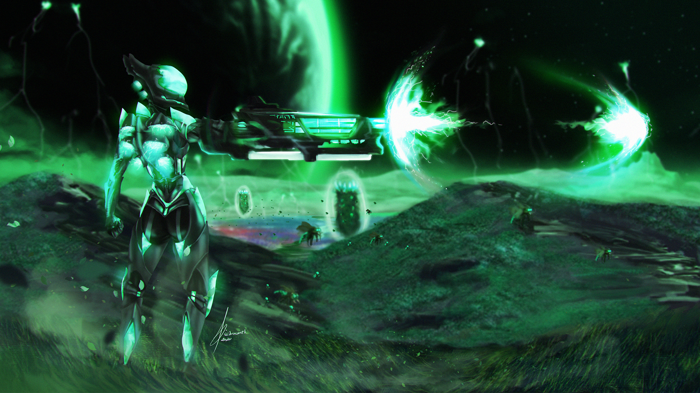
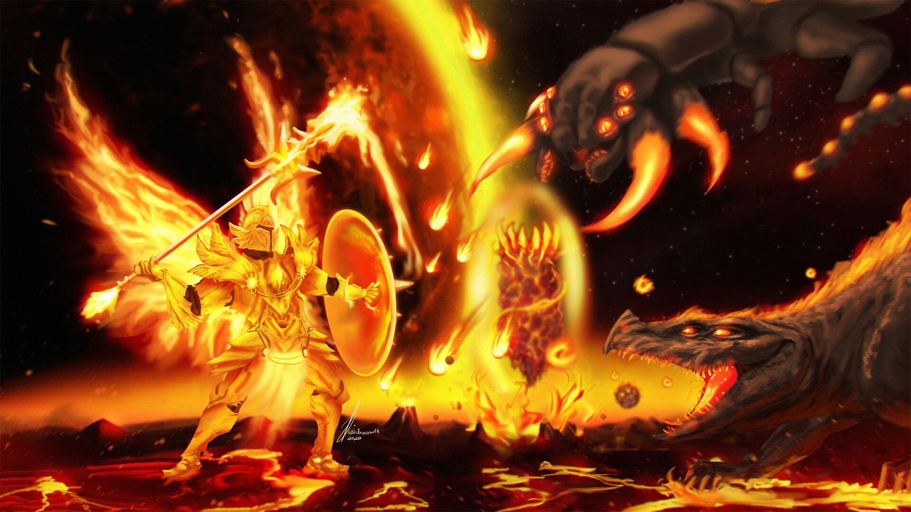
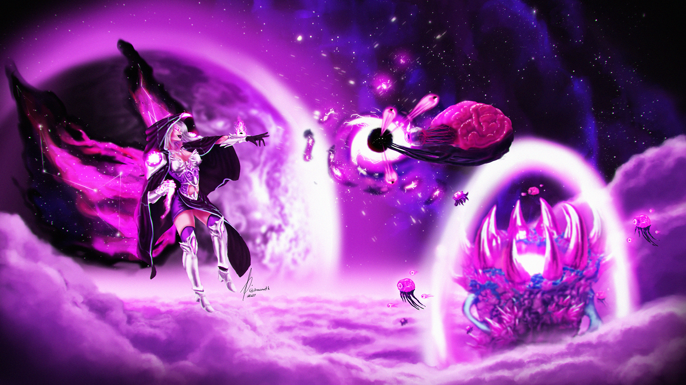
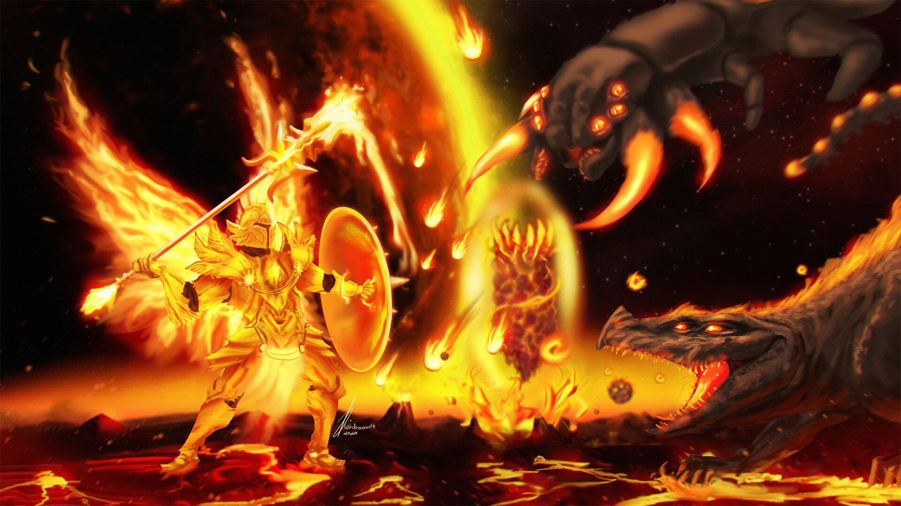
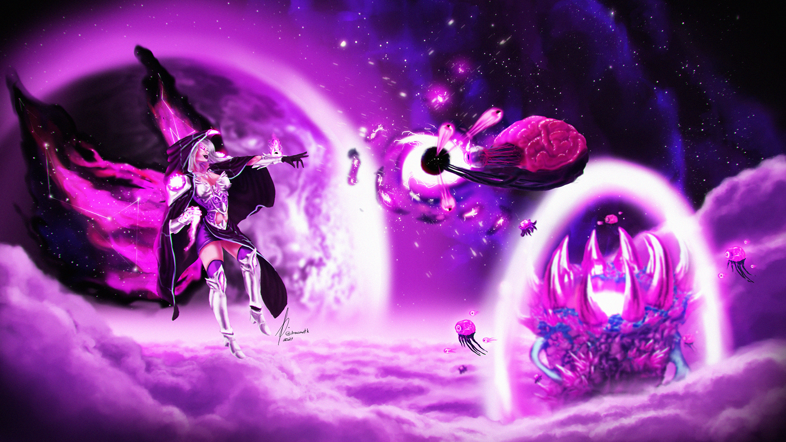
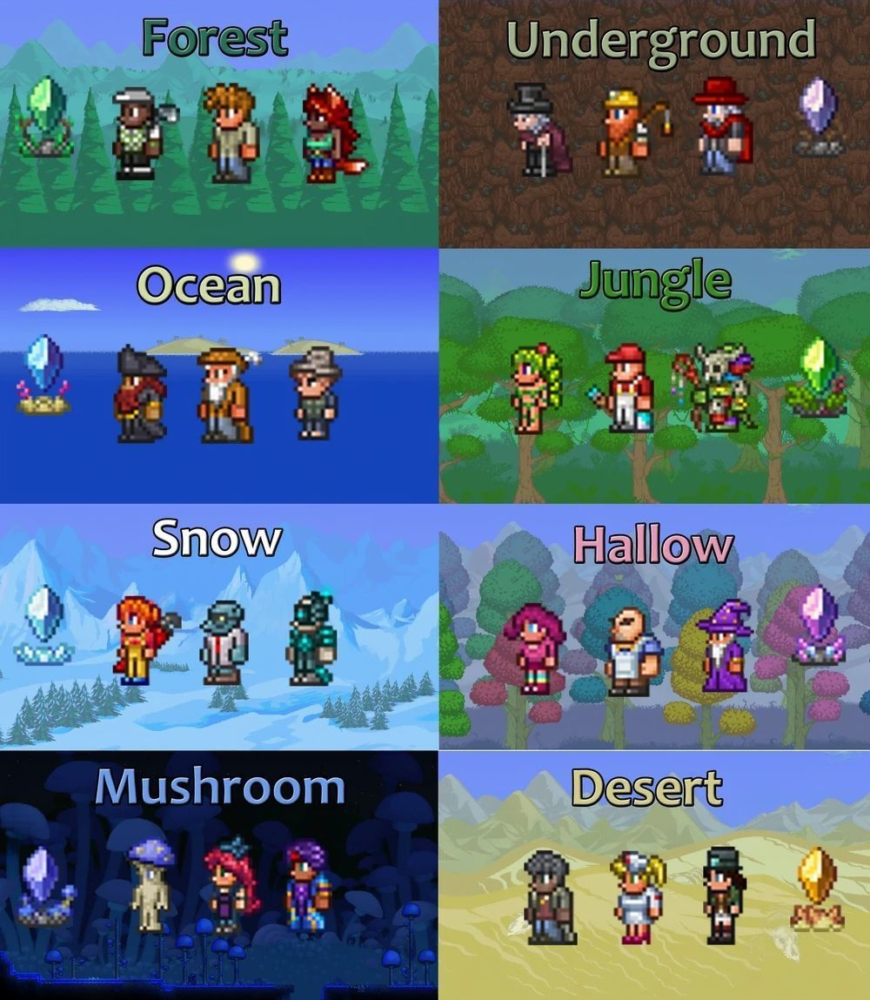

🌳 UNOFFICIAL TERRARIA WIKI 🌳
DESCRIÇÃO DAS CLASSES




"Summonner" é a classe mais diferente do terraria. Nela são usadas criaturas
"Ranged" é uma classe de combate à distância, que tem como principal foco causar muito dano aos inimigos, utilizando armas de longo alcance como arcos, pistolas, metralhadoras, canhões, ou seja, armas que consomem munição.

"Melee" é uma classe de combate corpo a corpo que tem como principal objetivo resistir a grandes quantidades de dano, e atacar inimigos com rapidez. Utiliza armamementos como espadas, lanças e ioiôs (sim, existe esse tipo de arma no terraria, e é muito forte!).

"Mage" também é uma classe de combate a distância, mas diferente da "ranged", os magos no terraria usam armas que consomem mana, e usam equipamentos que aumentam a quantidade da mesma. Alguns exemplos de armas de magos são: livros encantados, cajados e artefatos místicos.
"Summonner" é a classe mais diferente do terraria. Nela são usadas criaturas
invocadas, numa quantidade limitada, para batalhar por você. Essas criaturas podem ser animais, seres místicos e até objetos encantados. Um invocador no terraria tem papél fundamental na jogatina, pois na minha opinião é a melhor classe do jogo, por ter quantidades enormes de dano com suas invocações, enquanto pode estar de um local estratégico utilizando armas de outras classes.
ITENS PODEROSOS DE CADA CLASSE
| Ranged Items: | Vortex Helmet | Vortex Breastplate | Vortex Leggings | Vortex Beater |
| Melee Items: | Solar Flare Helmet | Solar Flare Breastplate | Solar Flare Leggings | Solar Eruption |
| Mage Items: | Nebula Helmet | Nebula Breastplate | Nebula Leggings | Nebula Blaze |
| Summon Items: | Stardust Helmet | Stardust Plate | Stardust Leggings | Stardust Dragon Staff |
GUIA DOS NPCs DO TERRARIA
| NPC | Descrição | Requisito de spawn |
| Guia | Fornece dicas e um guia geral sobre como adquirir outros NPCs e fornece receitas que incluem um item que é mostrado a ele. | Sempre já presente ao iniciar um novo mundo. |
| Comerciante | Vende ferramentas e suprimentos básicos. | Todos os jogadores combinados têm que ter mais de 50 pratas em seus inventários. |
| Enfermeira | Cura jogadores e cancela debuffs em troca de moedas. | Um jogador tem que ter mais de 100 pontos de vida e o Mercador está presente. |
| Especialista em Demolição | Vende explosivos. | Um jogador ter um explosivo em seu inventário e o Mercador está presente. |
| Comerciante de Tinturas | Vende a estação de fabricação Dye Vat. Fornece corantes raros em troca de Plantas Estranhas . | Um jogador ter um item de tintura ou qualquer item usado para criar tintura em seu inventário, além de algumas outras condições. |
| Pescador | Dá missões de pesca e recompensas aos jogadores por completá-las. | Encontrar e falar com ele em um bioma oceânico. |
| Zoologista | Vende itens temáticos de vaidade, montaria, mascote e bicho. | Pelo menos 10% do Bestiário (53 entradas) foi preenchido. |
| Dríade | Vende itens de natureza/ corrupção / carmesim , e pode relatar a porcentagem de corrupção/carmesim e relíquia no mundo. | Quando o Olho de Cthulhu, Devorador de Mundos / Cérebro de Cthulhu, ou Esqueleto for derrotado. |
| Pintor | Vende tintas, ferramentas de pintura e pinturas. | Quando 8/4 dos outros NPCs da cidade estiverem no mundo. |
| Golfista | Vende tacos de golfe, bolas e outros itens de golfe. | Encontrar e falar com ele no Deserto Subterrâneo . |
| Comerciante de Armas | Vende armas, balas e outras munições. | Um jogador ter balas ou uma arma que atira balas em seu inventário. |
| Taberneiro | Vende itens que convocam e ajudam a combater o Exército do Antigo, a maioria deles apenas em troca de Medalhas de Defensor. | Encontrar e falar com ele após o Devorador de Mundos ou Cérebro de Cthulhu ter sido derrotado. |
| Cabelereira | Pode mudar o penteado do jogador e vende Tinturas de Cabelo. | Encontrar e falar com ela em uma Caverna da Aranha. |
| Inventor Goblin | Vende itens como a Oficina do Inventor, e pode reforjar itens. | Encontrar e falar com ele na camada da Caverna, depois que uma Invasão Goblin foi derrotada. |
| Médico Bruxo | Vende a Zarabatana, a Estação de Impregnação, equipamento para invocadores e Fontes. | Derrotar a Abelha Rainha. |
| Alfaiate | Vende alguns itens decorativos, incluindo o Conjunto Familiar. | Derrotar o Esqueleto. |
| Mecânica | Vende Chave Inglesa, Fio, e outros itens relacionados a mecanismo. | Encontrar e falar com ela no Calabouço. |
| Feiticeiro | Vende itens relacionados a magia. | Encontrar e falar com ele na camada de Caverna. | Cobrador de Impostos | Coleta taxas de propriedade de outros NPCs. Ganha 50 por NPC presente, coletáveis pelo jogador. | Encontrar ele no Submundo e jogar Pó de Purificação nele. |
| Trufa | Vende o Martelo Automático, a Lança de Cogumelos, e outros itens com temática de cogumelo. | Ter uma casa disponível em um Bioma de Cogumelos Brilhantes acima do solo durante o Modo Difícil. |
| Pirata | Vende o Canhão e outros itens com temática pirata. | Derrotar uma Invasão Pirata. |
| Steampunker | Vende o Limpaminador, Teleportar, Jetpack, entre outros itens. | Derrotar um chefe mecânico. |
| Ciborgue | Vende o Lança-minas de Proximidade, Foguetes, e Nanobôs. | Derrotar a Plantera. |
| Papai Noel | Vende a fantasia de Papai Noel, luzes coloridas, árvores de Natal e suas decorações. | Derrotar a Legião Congelada e ser Natal. |
| Princesa | Vende o conjunto Real, Cetro Real, Chinelo de Vidro, o conjunto de Príncipe, Vasos de Plantas de Cristal, três pinturas únicas e uma adição à coleção de Caixas de Música. | Todos os outros NPCs terem uma casa (exceto o Papai Noel e bichinhos de estimação da cidade). |
| Caixeiro-Viajante | Fica até a tarde, vende uma seleção aleatória de itens a cada dia. | 22.12% de chance de aparecer durante as horas da manhã (04:30 AM – 12:00 PM) quando dois outros NPCs estiverem presentes. |
| Velho | Vive na entrada do Calabouço. | Encontrado na entrada do Calabouço. Convoca Esqueleto quando falar com ele, mas apenas à noite. Uma vez que o Esqueleto é derrotado, o Velho se muda para a cidade como o Alfaiate. |
| Comerciante Esqueleto | Raramente encontrado nas Cavernas. | Vende Contrapesos, Spelunker Glowsticks, Lanterna Mágica, a Luva Yoyo e alguns outros itens, com base no ciclo lunar. Alguns itens como o Slap Hand só podem ser obtidos com ele. |
GUIA DOS PYLONS

Pylons são grandes pedras ou cristais com tema de bioma. Eles permitem
que um jogador se teletransporte para qualquer outro pylon pressionando-o,
e selecionando pelo mapa.
Algumas regras que se aplicam aos pylons:
• Pilares só podem ser usados quando houver 2 ou mais NPCs vivos e alojados dentro de um retângulo padrão de casa.
• Os pilares só funcionam quando estão em seus respectivos biomas.
• Apenas um de cada tipo de pylon pode ser colocado em um mundo.
• A Rede Pylon não pode ser usada durante batalhas contra chefes ou quando invasões são anunciadas ou em andamento (incluindo os Eventos Lunares ).
• A Pylon Network não pode ser usada para percorrer longas distâncias sem
abrir o mapa em tela cheia.
• Os jogadores devem estar dentro do alcance de interação de um pylon para
se teletransportar usando a Rede do Pilar.
que um jogador se teletransporte para qualquer outro pylon pressionando-o,
e selecionando pelo mapa.
Algumas regras que se aplicam aos pylons:
• Pilares só podem ser usados quando houver 2 ou mais NPCs vivos e alojados dentro de um retângulo padrão de casa.
• Os pilares só funcionam quando estão em seus respectivos biomas.
• Apenas um de cada tipo de pylon pode ser colocado em um mundo.
• A Rede Pylon não pode ser usada durante batalhas contra chefes ou quando invasões são anunciadas ou em andamento (incluindo os Eventos Lunares ).
• A Pylon Network não pode ser usada para percorrer longas distâncias sem
abrir o mapa em tela cheia.
• Os jogadores devem estar dentro do alcance de interação de um pylon para
se teletransportar usando a Rede do Pilar.